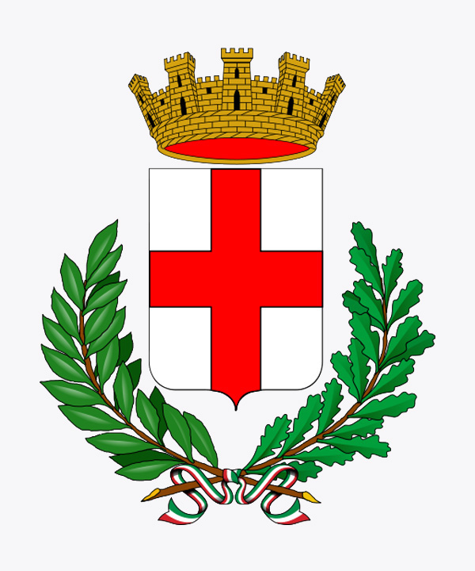
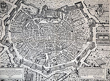
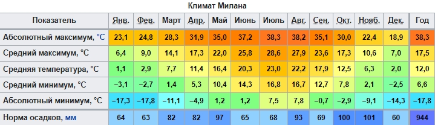
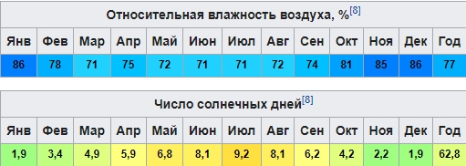

Мила́н(итал. Milano [miˈlaːno], ломб. Milan [miˈlãː], лат. Mediolanum — в центре равнины) — главный город северной части Италии. Относится к глобальным городам.
Административный центр области Ломбардия, самой крупной области Италии, и одноимённой территориальной единицы, приравненной к провинции.
Второй по величине город Италии и центр крупнейшей городской агломерации страны.
Географическое положение
Агломерация Милана или Большой Милан занимает площадь 1 982 км² и имеет население более 5 млн человек.
Город занимает площадь 181,76 км² и имеет население 1 342 385 человек (2015). Подразделяется на 9 городских районов или зон.
Герб

Герб (от польск. herb, от нем. Erbe — «наследие») — визуальный (то есть, существующий прежде всего в виде изображения) опознавательный знак (подвид эмблем), составленный и употребляемый по правилам геральдики, служащий для отличия владельца (личности, семьи, рода; населённого пункта, города, территории, государства, межгосударственного объединения; общественной, профессиональной, социальной или иной корпорации) от других.
История
Предполагается, что Милан был основан племенем инсубров примерно в 600 году до н. э.. Завоёван римлянами, давшими ему название Медиолан (лат. Mediolanium или Mediolanum), примерно в 222 году до н. э.
В IV веке нашей эры, во времена епископа Амвросия и императора Феодосия I, город соперничал с Римом и Равенной за звание центра Западной Римской империи. После разорения остготами и гуннами пришёл в упадок. Обветшавшие городские стены рухнули при лангобардах. Вся полнота власти перешла к миланскому архиепископу.
По мере роста материального благосостояния города возрастало значение торгового патрициата, который не желал мириться с всевластием церкви. В 1045 году был провозглашён самостоятельным государством (коммуной). Началась ожесточённая борьба за главенство в Ломбардии с такими коммунами, как Павия, Кремона, Комо и Лоди. В 1111 году Лоди был повержен, через 16 лет миланцами был разгромлен Комо.
Чрезмерное усиление горожан вызвало обеспокоенность императора Фридриха Барбароссы, который вторгся со своей армией на север Италии. Милан пал в 1162 году. После девятимесячной осады город был взят и разорён имперскими войсками. Жители разбрелись по сельской местности, укрепления были снесены. В 1167 году Милан был восстановлен силами Ломбардской лиги городов. Совместными усилиями коммун императору было нанесено поражение при Леньяно (1176) году.
По Констанцскому миру 1183 года за городом были признаны экономические привилегии, позволившие ему превратиться в один из богатейших городов Европы XIII века. Эта эпоха ознаменовалась противостоянием народной партии Торриани с городской аристократией во главе с родом Висконти. Торриани стали называть себя гвельфами, а сторонники Висконти — гибеллинами. В 1277 году архиепископ Оттоне Висконти одержал окончательную победу над своими врагами. Республиканская форма правления была заменена на монархическую.
Род Висконти продолжал править Миланом до 1450 года, после чего его сменила династия Сфорца. В эти годы город стал одним из первых в мире очагов капитализма. Дополнительный импульс местной экономике придало развитие шелкопрядения и то обстоятельство, что пандемия чумы обошла Ломбардию стороной. При дворе Сфорца работали такие мастера, как Леонардо да Винчи и Донато Браманте.

На рубеже XV и XVI веков Миланское герцогство стало яблоком раздора между французской династией Валуа и испанской Габсбургов. В эти годы Милан находился под управлением французов.
В 1540 году император Карл V Габсбург передал город своему сыну Филиппу Испанскому. Испанское владычество продолжалось до 1706 года. Все эти годы город переживал экономический и культурный застой. Подлинной катастрофой стала вспышка чумы в 1630 году, изображённая в классическом романе Алессандро Мандзони «Обручённые». По итогам Войны за испанское наследство город перешёл к австрийской ветви Габсбургов и стал медленно прогрессировать.
Во время Революционных войн Милан был оккупирован в 1796 году Итальянской армией Французской республики. Он был провозглашён столицей Цизальпинской республики, которая в 1802 году стала Итальянской, а в 1805 году Итальянским королевством.
По завершении Наполеоновских войн Милан вернулся под австрийское владычество, но продолжал оставаться одним из главных центров борьбы за объединение Италии. В 1859 году, после Второй Итальянской войны за независимость, город вместе со всей Ломбардией сверг австрийское правление и вошёл в королевство Сардиния, которое было преобразовано в королевство Италия в 1861 году. Поначалу планировалось сделать его столицей объединённого государства, однако по ряду причин эти планы были пересмотрены.
Как важнейший индустриальный центр Италии, во время Второй мировой войны подвергался ковровым бомбардировкам. Милан был частью марионеточного государства Итальянской Социальной Республики Муссолини и важным командным центром немецкой армии, размещённой в Италии.
К 25 апреля 1945 года, когда война в Италии была закончена, город оказался сильно разрушенным, а пригороды Прекотто и Терро полностью уничтожены. В послевоенные годы он был восстановлен и снова стал важным финансовым и индустриальным центром страны. Из остатков разбомблённых зданий, не подлежавших восстановлению, был насыпан холм Монте Стелла, на котором был разбит парк площадью 370 тысяч квадратных метров. Несмотря на повсеместную военную бедность город активно восстанавливали. На сегодняшний день Милан, Турин и Генуя образуют мощнейший индустриальный треугольник и главный экономический полюс Италии.
Климат
Характерен влажный субтропический климат с некоторыми признаками континентального, типичный для внутренних равнин северной Италии с жарким влажным летом и холодной влажной зимой, в отличие от средиземноморского климата на юге страны.
Средняя температура в центре города коле́блется от −3 до +4 °C в январе и от 19 до 30 °C в июле. Снегопады являются весьма распространённым явлением в зимний период, хотя в последние 15 — 20 лет они стали реже. Влажность довольно высокая на протяжении всего года, среднегодовой уровень осадков около 1000 мм.

